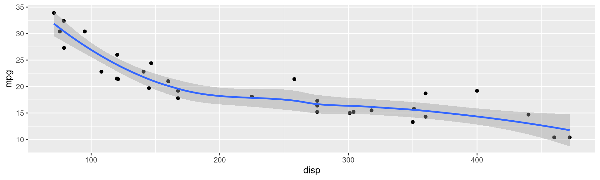

Making Accessible HTML documents with Quarto
University of Glasgow
June 8, 2026
What is Quarto?
Quarto is an open-source publishing system. You’ll be writing your content in Quarto’s Markdown language, a highly readable markdown format
Using markdown will mean your content is easily transformed into many different outputs both now and in the future
Markdown is not a TeX, Powerpoint or Word file. It’s closest to TeX, in spirit – it’s text-based, but has less syntax
Disclaimer
I don’t work for RStudio/Posit, but have just been working with their ecosystem since at least 2016 as it works for me. So, I’d say an experienced practitioner
Origins and modern day
Born from R, RStudio and the RMarkdown environment, but no longer just for R. Nowadays with native support for Python, Julia and ObservableJS (not that you need to know what they are)
The desire was for a system capable of creating outputs which contain code and the result of running it
The modern standalone quarto software means it can be used by people writing their resources in other environments (though RStudio & Positron offer nice visual interfaces)
a Quarto schematic

Artwork from “Hello, Quarto” keynote by Julia Lowndes and Mine Çetinkaya-Rundel, presented at RStudio Conference 2022. Illustrated by Allison Horst.
Documentation
The Quarto website <https://www.quarto.org> is generally excellent for documentation and well-maintained. Many features are identical to former RMarkdown, but some have been improved and streamlined
Extensive gallery of sample creations at <https://quarto.org/docs/gallery/>
Plus many excellent blogs, and personal sites with advice and recommendations
Especially check out work by Mine Çetinkaya-Rundel
Software interface choices
- Nowadays Posit make RStudio and Positron (based on VSCode)
- Quarto available as standalone software so
- can run from command-line with any text-editors
- just run
quarto render <filename>
- just run
- or via plug-ins inside VSCode, JupyterLab and others
- can run from command-line with any text-editors
I believe most people use RStudio (inertia), Positron or JupyterLab
These three offer built-in clickable buttons to ‘Build your output’
Output targets
For accessibility what we really want is a machine-readable output. Here are the common Quarto output formats, which do we want?
HTML? Definitely
PDF? Maybe
Word/docx? Maybe
revealjs? Yes, HTML for presentations
epub, pptx, and others? Unlikely
Pandoc is the real transformation software running behind Quarto to convert your source materials into these many outputs.
However not all output formats will be nice accessible things.
The rendering schema

Artwork from “Hello, Quarto” keynote by Julia Lowndes and Mine Çetinkaya-Rundel, presented at RStudio Conference 2022. Illustrated by Allison Horst.
Resource types
- Single page (e.g. worksheet)
- Multipage/Website (e.g. book, lecture notes)
- Separate mini-books (e.g lecture chapters)
- Lecture/Presentation slides (e.g. like these)
In our academic world many of these were historically PDF (thanks to LaTeX), or Word/Powerpoint (availability). In the last ten years, we now have easy access to HTML.
In Quarto-world there are many standard project templates: book, website, and presentation (i.e. slides), manuscripts and blog (but there are more!).
What is accessible?
I’m primarily talking about easily machine-readable HTML
So that any browser can display it and a user can customize if they wish
More generally, so that any external accessibility-focussed software can easily navigate and permit a student to explore whatever they desire in whatever way they wish or need
You’ve come to today’s workshop so you don’t need me going into detail what sorts of features and what needs or desires people may have – but I will tell you a little of how Quarto accommodates some of them
e.g. responsiveness, landmarks/heading/structure, further colour customization, navigability, use of language
Getting started
Install R (optional)
Install Python (optional)
Install an IDE (integrated development environment)
- RStudio and Positron contain Quarto
- JupyterLab you’ll want the Quarto extension
- Or just install Quarto separately
Examples, examples, examples
For getting started… the default plain templates/projects aren’t very informative
I recommend you start with a template of someone else’s work to see what’s possible
Some of my current favourites include Tom Coleman’s (St Andrews) examples from his recent Scottish Maths Support Network workshop <https://github.com/tdhc153/smsn-quarto-workshop>
Here is the workshop itself <https://tdhc153.github.io/smsn-quarto-workshop/>
Not many sample templates I’ve found specifically address accessibility. You may also like Uni of Glasgow staff template.
Accessibility concerns
- Lots of customization options
- easy to become in-accessible
- Not all features are super accessibility friendly out-of-the-box
- a few defaults are poor (currently)
- Occasional browser dependency issues
- fancier features may need checking
The good
- Images (
fig-alt) - Structure (
#,##,###, …) - Videos (
<video>or<iframe>) - Plug-ins (like a11y for slides)
- quarto add mcanouil/quarto-revealjs-a11y@0.1.1 then
A
- quarto add mcanouil/quarto-revealjs-a11y@0.1.1 then
- Responsiveness
- MathJax
- Code formatting (mostly)
- Browser plug-ins
The more difficult
- Dual HTML/PDF output (Quarto uses LaTeX)
- not universal feature overlap e.g. video, animations
- colour naming
- layout control
- LaTeX macros
- Dissemination/hosting of HTML
- Anything but a simple HTML document is multiple files
My tips
I can’t promise the “best” advice, but hopefully it’s very good
Tips for dual output, HTML plus PDF (via LaTeX)
This forces certain writing approaches for displaying elements, e.g.
- tables (
gridtables) - images (
title,caption,label,alt-text)
For example, when adding images only an R-chunk approach allows caption and alt text to be distinct (may change in future Quarto updates)
Colouring of text needs care too, in-built colours are not the same in HTML/CSS and LaTeX.
LaTeX knowledge is needed, to debug errors
Plug-ins and shortcodes
Just like new LaTeX packages may provide new functionality, you can seek out Quarto extensions (or even make them yourself) to add new functionality
Some of the good accessibility functionality will no doubt make its way into the core in future versions of Quarto without need to add them yourself
Examples of extensions include:
- revealjs a11y (press AA),
- numbered-boxes (see demo chapter 4),
- shortcodes,
- simple iframes (see demos: Numbas embed, nicer YouTube)
MathJax versions
Newer versions of MathJax are not always pointed to by default.
Sample equation
\[f(a) = \frac{1}{2\pi i} \oint\frac{f(z)}{z-a}dz\]
Code like this (in your qmd file header)
MathJax loading code
html-math-method:
method: mathjax
url: "https://cdn.jsdelivr.net/npm/mathjax@4/tex-mml-chtml.js"enforces the loading of the new MathJax 4.1.2 (at time of writing).
Videos
With the in-built shortcode syntax you an embed videos from elsewhere which already contain captions etc…
{{< video local-video.mp4 >}}
{{< video https://www.youtube.com/embed/wo9vZccmqwc >}}
{{< video https://vimeo.com/548291297 >}}
{{< video https://youtu.be/wo9vZccmqwc width="400" height="300" >}}
{{< video https://www.youtube.com/embed/wo9vZccmqwc
title="What is the CERN?"
start="116"
aria-label="Video demonstration of particle physics experiments
at CERN"
>}}Remote hosting and using existing accessibility features elsewhere is cleanest
Demo Quarto Markdown Source
The markdown code
+ Hello
+ Me
### Level 3 heading
Here is a small equation: $x^2+y^2=z^2.$
Or maybe a big equation,
$$
\int_{0}^{\infty}e^{-x^2}\,\textrm{d}x
$$ {#eq-abc}
$$
x^2+y^2 \tag{\dagger}
\label{eq:abc}
$$
That previous equation is manually tagged as \eqref{eq:abc}.
For automatic numbering in Quarto you must use \$\$ notation. This was equation @eq-abc.The output
- Hello
- Me
Level 3 heading
Here is a small equation: \(x^2+y^2=z^2.\)
Or maybe a big equation,
\[ \int_{0}^{\infty}e^{-x^2}\,\textrm{d}x \tag{1}\]
\[\begin{equation} x^2+y^2 \tag{\dagger} \label{eq:abc} \end{equation}\]
That previous equation is manually tagged as \(\eqref{eq:abc}\).
For automatic numbering in Quarto you must use $$ notation. This was equation Equation 1.
Responsiveness
Navigation
Navigating a Quarto-generated HTML with the keyboard can be a mixed bag
Not all in-built features behave perfectly, but they are improving
Tabbing generally works fine, in terms of reading order, all MathJax equations gain focus. The popular panel tabset could/will be improved, indeed it’s better already than when I last spoke about it
Callouts
Tip
Hopefully I can still do coloured boxes
If so, then I can also customize them like this:
Watch Out!
There’s danger ahead.
Built-in callouts use strong contrasting colours in light mode. In dark mode they can need a black background.
Let’s do R

Let’s do R

Browser plug-ins
In Firefox, for example,
- WAVE (accessibility checker)
- Alt Text Viewer / AltVision
- HeadingsMap
- Stylebot
- Color Changer
Disclaimer
I’m not endorsing any of these!
Have a play this afternoon!
This ends my little tour
Courtesy of paprycjusz on Instagram